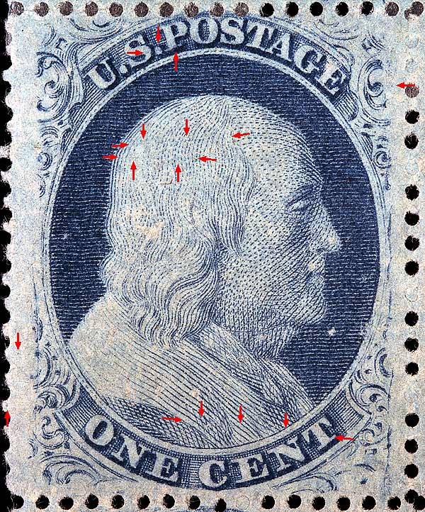
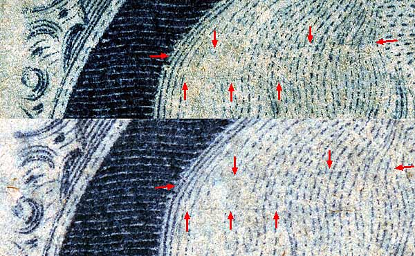
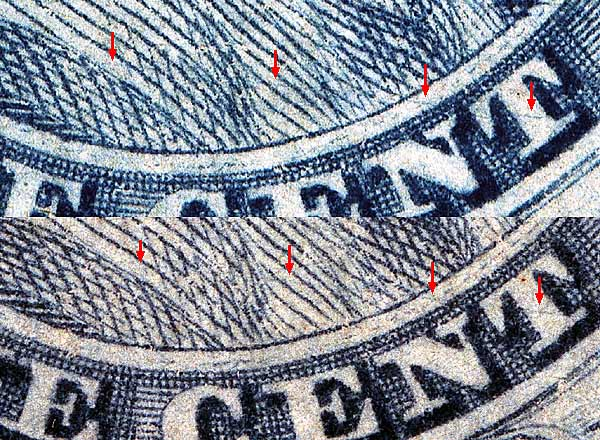
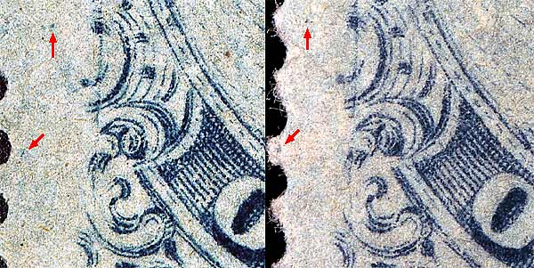
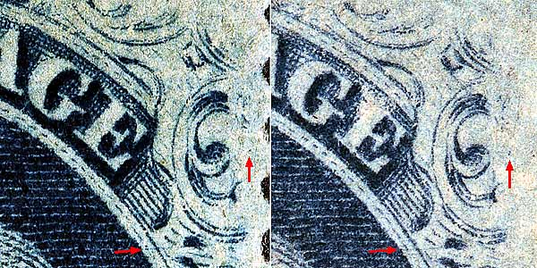
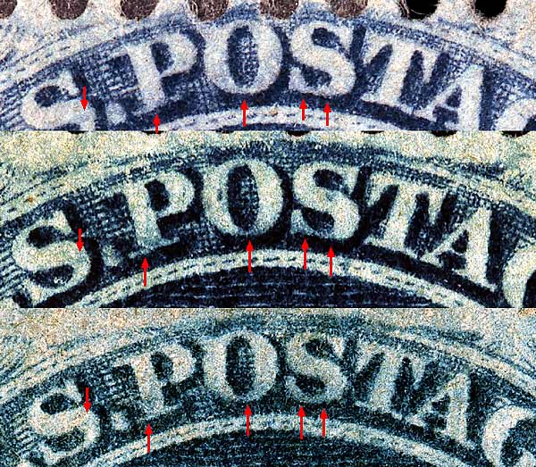

1¢ Franklin Issue of 1857-1861, PLATE 8 Pos 35R8, (Scott #24) |
| Scott #24 Blue, Type V, Relief D Issued only Perforate. UNUSED BLOCK OF 10 CONSISTING OF 32, 33, 34, 35, 42, 43, 44, 45, 52, 53R8 Neinken indicates this position has no plating marks. |
|  |
| FIGURE 1. (Below) Two faint nearly horizontal scratches across the top of Franklins head confirmed here as consistent
 |
| FIGURE 2. (Below) A long plate scratch starting at the "T" of CENT and extending across the shoulder confirmed here as consistent.
 |
| FIGURE 3. (Below) Small dots of color to the left of Ornament F and Ornament H.
 |
| FIGURE 4. (Below) Small plate scratch below and to the left of Ornament M is an extention or continuation of the upper plate scratch found in Franklins head. (See FIGURE 1.)
 |
| FIGURE 5. (Below) Many illustrations in the Ashbrook and Neinken plating diagrams show blurs in the lettering. Often times these are difficult to interpret. Weak or dry printings don't show these blurs well and worn or later plate impressions may not show them at all.
 |
DISCLAIMER and COPYRIGHT INFORMATION: Thanks for visiting this site. I hope you learn something new as we are making new discoveries all the time. You, the visitor, have my permission to link to my pages and to share the INFORMATION with others. The images themselves fall under the fair use guidelines established by the United States Congress and Copyright law. Basically contact us before using. I also ask in return that you send me an e-mail if I have made a mistake, or have made some other technical blunder that in my rush to put these pages up would cause the visitor confusion. Please also visit my other website at www.slingshotvenus.com. and support the live music arts. While your there, be sure to purchase our music. There are not many philatelic rock stars around and we need all the help we can get. :-) I can be reached at: nerdman@ix.netcom.com Update 11/16/06 |